건축기사 (2022-04-24 기출문제)
1과목: 건축계획
1. 장애인ㆍ노인ㆍ임산부 등의 편의증진 보장에 관한 법령에 따른 편의시설 중 매개시설에 속하지 않는 것은?
- 주출입구 접근로
- 유도 및 안내설비
- 장애인전용 주차구역
- 주출입구 높이차이 제거
(정답률: 38%)

2. 다음 중 사무소 건축의 기둥간격 결정 요소와 가장 거리가 먼 것은?
- 책상배치의 단위
- 주차배치의 단위
- 엘리베이터의 설치 대수
- 채광상 층높이에 의한 깊이
(정답률: 44%)
3. 우리나라 전통 한식주택에서 문꼴부분(개구부)의 면적이 큰 이유로 가장 적합한 것은?
- 겨울의 방한을 위해서
- 하절기 고온다습을 견디기 위해서
- 출입하는데 편리하게 하기 위해서
- 상부의 하중을 효과적으로 지지하기 위해서
(정답률: 68%)
4. 공장건축의 레이아웃(Lay out)에 관한 설명으로 옳지 않은 것은?
- 제품중심의 레이아웃은 대량생산에 유리하며 생산성이 높다.
- 레이아웃이란 공장건축의 평면요소간의 위치 관계를 결정하는 것을 말한다.
- 고정식 레이아웃은 조선소와 같이 제품이 크고 수량이 적은 경우에 행해진다.
- 중화학 공업, 시멘트 공업 등 장치공업 등은 시설의 융통성이 크기 때문에 신설시 장래성에 대한 고려가 필요 없다.
(정답률: 64%)
5. 메조넷형 아파트에 관한 설명으로 옳지 않은 것은?
- 다양한 평면구성이 가능하다.
- 소규모 주택에서는 비경제적이다.
- 통로면적이 감소되며 유효면적이 증대된다.
- 복도와 엘리베이터홀은 각 층마다 계획된다.
(정답률: 40%)
6. 고층밀집형 병원에 관한 설명으로 옳지 않은 것은?
- 병동에서 조망을 확보할 수 있다.
- 대지를 효과적으로 이용할 수 있다.
- 각종 방재대책에 대한 비용이 높다.
- 병원의 확장 등 성장변화에 대한 대응이 용이하다.
(정답률: 54%)
7. 주당 평균 40시간을 수업하는 어느 학교에서 음악실에서의 수업이 총 20시간이며 이 중 15시간은 음악시간으로 나머지 5시간은 학급토론시간으로 사용되었다면, 이 음악실의 이용률과 순수율은?
- 이용률 37.5%, 순수율 75%
- 이용률 50%, 순수율 75%
- 이용률 75%, 순수율 37.5%
- 이용률 75%, 순수율 50%
(정답률: 65%)
8. 극장건축에서 무대의 제일 뒤에 설치되는 무대 배경용의 벽을 의미하는 것은?
- 사이클로라마
- 플라이 로프트
- 플라이 갤러리
- 그리드 아이언
(정답률: 54%)
9. 도서관의 출납시스템 중 자유개가식에 관한 설명으로 옳은 것은?
- 도서의 유지 관리가 용이하다.
- 책의 내용 파악 및 선택이 자유롭다.
- 대출절차가 복잡하고 관원의 작업량이 많다.
- 열람자는 직접 서가에 면하여 책의 표지 정도는 볼 수 있으나 내용은 볼 수 없다.
(정답률: 66%)
10. 미술관 전시실의 순회형식 중 연속순로 형식에 관한 설명으로 옳은 것은?
- 각 실을 필요시에는 자유로이 독립적으로 폐쇄할 수 있다.
- 평면적인 형식으로 2, 3개 층의 입체적인 방법은 불가능하다.
- 많은 실을 순서별로 통하여야 하는 불편이 있으나 공간절약의 이점이 있다.
- 중심부에 하나의 큰 홀을 두고 그 주위에 각 전시실을 배치하여 자유로이 출입하는 형식이다.
(정답률: 52%)
11. 서양 건축양식의 역사적인 순서가 옳게 배열된 것은?
- 로마→로마네스크→고딕→르네상스→바로크
- 로마→고딕→로마네스크→르네상스→바로크
- 로마→로마네스크→고딕→바로크→르네상스
- 로마→고딕→로마네스크→바로크→르네상스
(정답률: 47%)
12. 르네상스 교회 건축양식의 일반적 특징으로 옳은 것은?
- 타원형 등 곡선평면을 사용하여 동적이고 극적인 공간연출을 하였다.
- 수평을 강조하며 정사각형, 원 등을 사용하여 유심적 공간구성을 하였다.
- 직사각형의 평면구성으로 볼트구조의 지붕을 구성하며 종탑을 설치하였다.
- 로마네스크 건축의 반원아치를 발전시킨 첨두형 아치를 주로 사용하였다.
(정답률: 24%)
13. 아파트의 평면형식에 관한 설명으로 옳지 않은 것은?
- 홀형은 통행부 면적이 작아서 건물의 이용도가 높다.
- 중복도형은 대지 이용률이 높으나, 프라이버시가 좋지 않다.
- 집중형은 채광ㆍ통풍 조건이 좋아 기계적 환경조절이 필요하지 않다.
- 홀형은 계단실 또는 엘리베이터 홀로부터 직접 주거 단위로 들어가는 형식이다.
(정답률: 55%)
14. 페리의 근린주구이론의 내용으로 옳지 않은 것은?
- 주민에게 적절한 서비스를 제공하는 1~2개소 이상의 상점가를 주요도로의 결절점에 배치하여야 한다.
- 내부 가로망은 단지 내의 교통량을 원활히 처리하고 통과교통에 사용되지 않도록 계획되어야 한다.
- 근린주구의 단위는 통과교통이 내부를 관통하지 않고 용이하게 우회할 수 있는 충분한 넓이의 간선도로에 의해 구획되어야 한다.
- 근린주구는 하나의 중학교가 필요하게 되는 인구에 대응하는 규모를 가져야 하고, 그 물리적 크기는 인구밀도에 의해 결정되어야 한다.
(정답률: 49%)
15. 다음 설명에 알맞은 백화점 진열장 배치방법은?
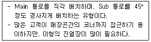
- 직각배치
- 방사배치
- 사행배치
- 자유유선배치
(정답률: 37%)
16. 다음 중 주심포식 건물이 아닌 것은?
- 강릉 객사문
- 서울 남대문
- 수덕사 대웅전
- 무위사 극락전
(정답률: 40%)
17. 극장건축의 음향계획에 관한 설명으로 옳지 않은 것은?
- 음향계획에 있어서 발코니의 계획은 될 수 있는 한 피하는 것이 좋다.
- 음의 반복 반사 현상을 피하기 위해 가급적 원형에 가까운 평면형으로 계획한다.
- 무대에 가까운 벽은 반사체로 하고 멀어짐에 따라서 흡음재의 벽을 배치하는 것이 원칙이다.
- 오디토리움 양쪽의 벽은 무대의 음을 반사에 의해 객석 뒷부분까지 이르도록 보강해 주는 역할을 한다.
(정답률: 35%)
18. 쇼핑센터의 특징적인 요소인 페데스트리언 지대(pedestrian area)에 관한 설명으로 옳지 않은 것은?
- 고객에게 변화감과 다채로움, 자극과 흥미를 제공한다.
- 바닥면의 고저차를 많이 두어 지루함을 주지 않도록 한다.
- 바닥면에 사용하는 재료는 주위 상황과 조화시켜 계획한다.
- 사람들의 유동적 동선이 방해되지 않는 범위에서 나무나 관엽식물을 둔다.
(정답률: 43%)
19. 그리스 건축의 오더 중 도릭 오더의 구성에 속하지 않는 것은?
- 볼류트(Volite)
- 프리즈(frieze)
- 아바쿠스(abacus)
- 에키누스(echinus)
(정답률: 29%)
20. 오피스 랜드스케이프(office landscape)에 관한 설명으로 옳지 않은 것은?
- 외부조경면적이 확대된다.
- 작업의 패쇄성이 저하된다.
- 사무능률의 향상을 도모한다.
- 공간의 효율적 이용이 가능하다.
(정답률: 39%)
2과목: 건축시공
21. 목공사에 사용되는 철물에 관한 설명으로 옳지 않은 것은?
- 감잡이쇠는 큰 보에 걸쳐 작은 보를 받게 하고, 안장쇠는 평보를 대공에 달아매는 경우 또는 평보와 ㅅ자보의 밑에 쓰인다.
- 못의 길이는 박아대는 재두께의 2.5배 이상이며, 마구리 등에 받는 것은 3.0배 이상으로 한다.
- 볼트 구멍은 볼트지름보다 3mm 이상 커서는 안 된다.
- 듀벨은 볼트와 같이 사용하여 듀벨에는 전단력, 볼트에는 인장력을 분담시킨다.
(정답률: 20%)
22. 지명 경쟁 입찰을 택하는 이유 중 가장 중요한 것은?
- 공사비의 절감
- 양질의 시공 결과 기대
- 준공기일의 단축
- 공사 감리의 편리
(정답률: 36%)
23. 실의 크기 조절이 필요한 경우 칸막이 기능을 하기 위해 만든 병풍 모양의 문은?
- 여닫이문
- 자재문
- 미서기문
- 홀딩 도어
(정답률: 35%)
24. 강제 배수 공법의 대표적인 공법으로 인접 건축물과 토류판 사이에 케이싱 파이프를 삽입하여 지하수를 펌프 배수하는 공법은?
- 집수정 공법
- 웰 포인트 공법
- 리버스 서큘레이션 공법
- 전기 삼투 공법
(정답률: 27%)
25. 기계가 위치한 곳보다 높은 곳의 굴착에 가장 적당한 건설기계는?
- Dragline
- Back hoe
- Power Shovel
- Scraper
(정답률: 36%)
26. 건축공사 스프레이 도장방법에 관한 설명으로 옳지 않은 것은?
- 도장거리는 스프레이 도장면에서 300mm를 표준으로 한다.
- 매 회의 에어스프레이는 붓도장과 동등한 정도의 두께로 하고, 2회분의 도막 두께를 한 번에 도장하지 않는다.
- 각 회의 스프레이 방향은 전회의 방향에 평행으로 진행한다.
- 스프레이할 때는 항상 평행이동하면서 운행의 한 줄마다 스프레이 너비의 1/3 정도를 겹쳐 뿜는다.
(정답률: 27%)
27. 철근콘크리트공사 시 벽체 거푸집 또는 보 거푸집에서 거푸집판을 일정한 간격으로 유지시켜 주는 동시에 콘크리트의 측압을 최종적으로 지지하는 역할을 하는 부재는?
- 인서트
- 컬럼밴드
- 폼타이
- 턴버클
(정답률: 39%)
28. 커튼월(curtain wall)에 관한 설명으로 옳지 않은 것은?
- 주로 내력벽에 사용된다.
- 공장생산이 가능하다.
- 고층건물에 많이 사용된다.
- 용접이나 볼트조임으로 구조물에 고정시킨다.
(정답률: 40%)
29. TQC를 위한 7가지 도구 중 다음 설명에 해당하는 것은?
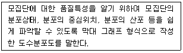
- 히스토그램
- 특성요인도
- 파레토도
- 체크시트
(정답률: 35%)
30. 건설현장에서 근무하는 공사감리자의 업무에 해당되지 않는 것은?
- 공사시공자가 사용하는 건축자재가 관계법령에 의한 기준에 적합한 건축자재인지 여부의 확인
- 상세시공도면의 작성
- 공사현장에서의 안전관리지도
- 품질시험의 실시여부 및 시험성과의 검토ㆍ확인
(정답률: 42%)
31. 석고 플라스터에 관한 설명으로 옳지 않은 것은?
- 석고 플라스터는 경화지연제를 넣어서 경화시간을 너무 빠르지 않게 한다.
- 경화ㆍ건조 시 치수 안정성과 내화성이 뛰어나다.
- 석고 플라스터는 공기 중의 탄산가스를 흡수하여 표면부터 서서히 경화한다.
- 시공 중에는 될 수 있는 한 통풍을 피하고 경화 후에는 적당한 통풍을 시켜야 한다.
(정답률: 29%)
32. 미장 공사에서 균열을 방지하기 위하여 고려해야 할 사항 중 옳지 않은 것은?
- 바름면은 바람 또는 직사광선 등에 의한 급속한 건조를 피한다.
- 2회의 바름 두께는 가급적 얇게 한다.
- 쇠 흙손질을 충분히 한다.
- 모르타르 바름의 정벌바름은 초벌바름보다 부배합으로 한다.
(정답률: 34%)
33. 고강도 콘크리트에 관한 내용으로 옳지 않은 것은?
- 설계기준압축강도는 보통 또는 중량공재콘크리트에서 40MPa 이상인 것으로 한다.
- 고성능 감수제의 단위량은 소요 강도 및 작업에 적합한 워커빌리티를 얻도록 시험에 의해서 결정하여야 한다.
- 단위수량은 소요의 워커빌리티를 얻을 수 있는 범위 내에서 가능한 한 작게 하여야 한다.
- 기상의 변화나 동결융해 발생 여부에 관계없이 공기연행제를 사용하는 것을 원칙으로 한다.
(정답률: 30%)
34. 건축공사에서 활용되는 견적방법 중 가장 상세한 공사비의 산출이 가능한 견적방법은?
- 개산견적
- 명세견적
- 입찰견적
- 실행견적
(정답률: 38%)
35. 벽돌에 생기는 백화를 방지하기 위한 방법으로 옳지 않은 것은?
- 10% 이하의 흡수율을 가진 양질의 벽돌을 사용한다.
- 벽돌면 상부에 빗물막이를 설치한다.
- 파라핀 도료를 발라 염류가 나오는 것을 방지한다.
- 줄눈 모르타르에 석회를 넣어 바른다.
(정답률: 28%)
36. 주문받은 건설업자가 대상계획의 기업, 금융, 토지조달, 설계, 시공 기타 모든 요소를 포괄하여 발주하는 도급계약 방식은?
- 실비청산 보수가산 도급
- 정액도급
- 공동도급
- 턴키도급
(정답률: 40%)
37. 서로 다른 종류의 금속재가 접촉하는 경우 부식이 일어나는 경우가 있는데 부식성이 큰 금속 순으로 옳게 나열된 것은?
- 알루미늄>철>주석>구리
- 주석>철>알루미늄>구리
- 철>주석>구리>알루미늄
- 구리>철>알루미늄>주석
(정답률: 31%)
38. 프리스트레스트 콘크리트에 관한 설명으로 옳은 것은?
- 진공매트 또는 진공펌프 등을 이용하여 콘크리트로부터 수화에 필요한 수분과 공기를 제거한 것이다.
- 고정시설을 갖춘 공장에서 부재를 철재거푸집에 의하여 제작한 기성제품 콘크리트(PC)이다.
- 포스트텐션 공법은 미리 강선을 압축하여 콘크리트에 인장력으로 작용시키는 방법이다.
- 장스팬 구조물에 적용할 수 있으며, 단위부재를 작게 할 수 있어 자중이 경감되는 특징이 있다.
(정답률: 15%)
39. 다음 그림과 같은 건물에서 G1과 같은 보가 8개 있다고 할 때 보의 총 콘크리트량을 구하면? (단, 보의 단면상 슬래브와 겹치는 부분은 제외하며, 철근량은 고려하지 않는다.)
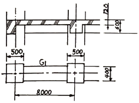
- 11.52m3
- 12.23m3
- 13.44m3
- 15.36m3
(정답률: 13%)
40. 포틀랜드시멘트 화학성분 중 1일 이내 수화를 지배하며 응결이 가장 빠른 것은?
- 알루민산 3석회
- 알루민산철4석회
- 규산3석회
- 규산2석회
(정답률: 35%)
3과목: 건축구조
41. 고장력볼트접합에 관한 설명으로 옳지 않은 것은?
- 유효단면적당 응력이 크며, 피로강도가 작다.
- 강한 조임력으로 너트의 풀림이 생기지 않는다.
- 응력방향이 바뀌더라도 혼란이 일어나지 않는다.
- 접합방식에는 마찰접합, 지압접합, 인장접합이 있다.
(정답률: 35%)
42. 지진에 대응하는 기술 중 하나인 제 진(製震)에 관한 설명으로 옳지 않은 것은?
- 기존 건물의 구조형식에 좌우되지 않는다.
- 지반종류에 의한 제약을 받지 않는다.
- 소형 건물에 일반적으로 많이 적용된다.
- 댐퍼 등을 사용하여 흔들림을 효과적으로 제어한다.
(정답률: 20%)
43. 콘크리트구조의 내구성설계기준에 따른 보수ㆍ보강 설계에 관한 설명으로 옳지 않은 것은?
- 손상된 콘크리트 구조물에서 안전성, 사용성, 내구성, 미관 등의 기능을 회복시키기 위한 보수는 타당한 보수설계에 근거하여야 한다.
- 보수ㆍ보강 설계를 할 때는 구조체를 조사하여 손상 원인, 손상 정도, 저항내력 정도를 파악한다.
- 책임구조기술자는 보수ㆍ보강 공사에서 품질을 확보하기 위하여 공정별로 품질관리검사를 시행하여야 한다.
- 보강설계를 할 때에는 사용성과 내구성 등의 성능은 고려하지 않고, 보강 후의 구조내하력 증가만을 반영한다.
(정답률: 30%)
44. 그림과 같은 직사각형 단면을 가지는 보에 최대 휨모멘트 M=20kNㆍm가 작용할 때 최대 휨응력은?
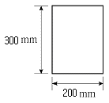
- 3.33MPa
- 4.44MPa
- 5.56MPa
- 6.67MPa
(정답률: 21%)
45. 그림과 같은 복근보에서 전단보강철근이 부담하는 전단력 Vs를 구하면? (단, fck = 24MPa, fy = 400MPa, fyt = 300MPa, Av = 71mm2)
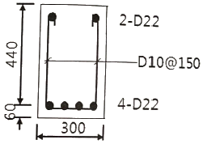
- 약 110kN
- 약 115kN
- 약 120kN
- 약 125kN
(정답률: 8%)
46. 강도설계법에서 단근직사각형 보의 c(압축연단에서 중립축까지 거리)값으로 옳은 것은? (단, fck = 24MPa, fy = 400MPa, b = 300mm, As = 1161mm2, 포물선-직선 형상의 응력 -변형률 관계 이용)
- 92.65mm
- 94.85mm
- 96.65mm
- 98.85mm
(정답률: 22%)
47. 그림의 용접기호와 관련된 내용으로 옳은 것은?
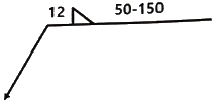
- 양면용접에 용접길이 50mm
- 용접 간격 100mm
- 용접 치수 12mm
- 맞댐(개선) 용접
(정답률: 25%)
48. 그림과 같은 3회전단 구조물의 반력은?
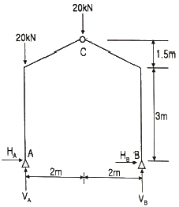
- HA=4.44kN, VA=30kN
HB=-4.44kN,, VB=10kN - HA=0, VA=30kN
HB=0, VB=10kN - HA=-4.44kN, VA-30kN
HB=4.44kN, VB=10kN - HA=4.44kN, VA=50kN
HB=-4.44kN, VB=-10kN
(정답률: 18%)
49. 그림과 같은 양단 고정보에서 B단의 휨모멘트 값은?
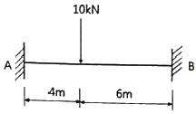
- 2.4kNㆍm
- 9.6kNㆍm
- 14.4kNㆍm
- 24.8kNㆍm
(정답률: 28%)
50. 1방향 철근콘크리트 슬래브에 배치하는 수축ㆍ온도철근에 관한 기준으로 옳지 않은 것은?
- 수축ㆍ온도철근으로 배치되는 이형철근 및 용접철망의 철근비는 어떤 경우에도 0.0014이상이어야 한다.
- 수축ㆍ온도철근으로 배치되는 설계기준항복강도가 400MPa을 초과하는 이형철근 또는 용접철망을 사용한 슬래브의 철근비는
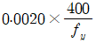
로 산정한다. - 수축ㆍ온도철근의 간격은 슬래브 두께의 6배 이하, 또한 600mm 이하로 하여야 한다.
- 수축ㆍ온도철근은 설계기준항복강도 fy를 발휘할 수 있도록 정착되어야 한다.
(정답률: 25%)
51. 다음 그림과 같은 인장재의 순단면적을 구하면? (단, F10T-M20볼트 사용(표준구멍), 판의 두께는 6mm임)
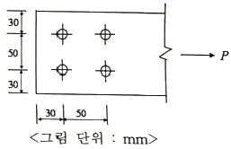
- 296mm2
- 396mm2
- 426mm2
- 536mm2
(정답률: 23%)
52. 그림과 같은 내민보에 집중하중이 작용할 때 A점의 처짐각 ɵA를 구하면?
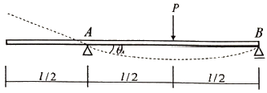
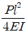
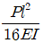
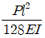
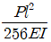
(정답률: 25%)
53. 양단 힌지인 길이 6m의 H-300×300×10×15의 기둥이 부재중앙에서 약축방향으로 가새를 통해 지지되어 있을 때 설계용 세장비는? (단, rx = 131mm, ry = 75.1mm)
- 39.9
- 45.8
- 58.2
- 66.3
(정답률: 24%)
54. 과도한 처짐에 의해 손상되기 쉬운 비구조 요소를 지지 또는 부착하지 않은 바닥구조의 활하중 L에 의한 순간처짐의 한계는?
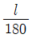
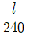
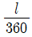
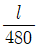
(정답률: 23%)
55. 다음과 같은 사다리꼴 단면의 도심 yo 값은?
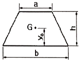
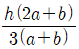
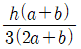
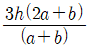
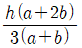
(정답률: 25%)
56. 그림과 같은 라멘에 있어서 A점의 모멘트는 얼마인가? (단, k는 강비이다.)
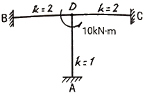
- 1 kNㆍm
- 2 kNㆍm
- 3 kNㆍm
- 4 kNㆍm
(정답률: 30%)
57. 연약한 지반에 대한 대책 중 하부구조의 조치사항으로 옳지 않은 것은?
- 동일 건물의 기초에 이질 지정을 둔다.
- 경질지반에 기초판을 지지한다.
- 지하실을 설치한다.
- 경질지반이 깊을 때는 마찰말뚝을 사용한다.
(정답률: 25%)
58. 프리스트레스하지 않는 부재의 현장치기 콘크리트 중 흙에 접하여 콘크리트를 친 후 영구히 흙에 묻혀 있는 콘크리트의 최소 피복두께 기준으로 옳은 것은?
- 100mm
- 75mm
- 50mm
- 40mm
(정답률: 24%)
59. 그림과 같은 구조물의 부정정 차수는?
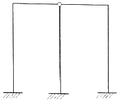
- 1차 부정정
- 2차 부정정
- 3차 부정정
- 4차 부정정
(정답률: 33%)
60. 철골구조 주각부의 구성요소가 아닌 것은?
- 커버 플레이트
- 앵커볼트
- 리브 플레이트
- 베이스 플레이트
(정답률: 25%)
4과목: 건축설비
61. 배수관의 관경과 구배에 관한 설명으로 옳지 않은 것은?
- 배관구배를 완만하게 하면 세정력이 저하된다.
- 배수관경을 크게 하면 할수록 배수능력은 향상된다.
- 배관구배를 너무 급하게 하면 흐름이 빨라 고형물이 남는다.
- 배관구배를 너무 급하게 하면 관로의 수류에 의한 파손 우려가 높아진다.
(정답률: 19%)
62. 한 시간당 급탕량이 5m3일 때 급탕부하는 얼마인가? (단, 물의 비열은 4.2kJ/kgㆍK, 급탕온도는 70℃, 급수온도는 10℃이다.)
- 35kW
- 126kW
- 350kW
- 1260kW
(정답률: 10%)
63. 엘리베이터의 조작 방식 중 무운전원 방식으로 다음과 같은 특징을 갖는 것은?
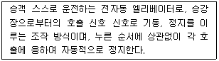
- 단식자동방식
- 카 스위치방식
- 승합전자동방식
- 시그널 콘트롤 방식
(정답률: 13%)
64. 전기샤프트(ES)의 계획 시 고려사항으로 옳지 않은 것은?
- 각 층마다 같은 위치에 설치한다.
- 기기의 배치와 유지보수에 충분한 공간으로하고, 건축적인 마감을 실시한다.
- 점검구는 유지보수 시 기기의 반출입이 가능하도록 하여야 하며, 점검구 문의 폭은 최소 300mm 이상으로 한다.
- 공급대상 범위의 배선거리, 전압강하 등을 고려하여 가능한 한 공급 대상설비 시설 위치의 중심부에 위치하도록 한다.
(정답률: 20%)
65. 다음 중 변전실 면적에 영향을 주는 요소와 가장 거리가 먼 것은?
- 발전기실의 면적
- 변전설비 변압방식
- 수전전압 및 수전방식
- 설치 기기와 큐비클의 종류
(정답률: 23%)
66. 배수트랩의 봉수가 파손되는 것을 방지하기 위한 방법으로 옳지 않은 것은?
- 자기사이펀 작용에 의한 봉수파괴를 방지하기 위하여 S트랩을 설치한다.
- 유도사이펀 작용에 의한 봉수파괴를 방지하기 위하여 도피통기관을 설치한다.
- 증발현상에 의한 봉수파괴를 방지하기 위하여 트랩 봉수 보급수 장치를 설치한다.
- 역압에 의한 분출작용을 방지하기 위하여 배수 수직관의 하단부에 통기관을 설치한다.
(정답률: 8%)
67. 다음의 간선 배전방식 중 분전반에서 사고가 발생했을 때 그 파급 범위가 가장 좁은 것은?
- 평행식
- 방사선식
- 나뭇가지식
- 나뭇가지 평행식
(정답률: 20%)
68. 스프링클러설비를 설치하여야 하는 특정소방 대상물의 최대 방수구역에 설치된 개방형스프링 클러헤드의 개수가 30개 일 경우, 스프링클러 설비의 수원의 저수량은 최소 얼마 이상으로 하여야 하는가?
- 16m3
- 32m3
- 48m3
- 56m3
(정답률: 21%)
69. 열관류율 K=2.5W/m2ㆍK인 벽체의 양쪽 공기온도가 각각 20℃와 0℃일 때, 이 벽체 1m2당 이동열량은?
- 25W
- 50W
- 100W
- 200W
(정답률: 25%)
70. 어느 점광원과 1m 떨어진 곳의 직각면 조도가 800[lx]일 때, 이 광원과 4m 떨어진 곳의 직각면 조도는?
- 50[lx]
- 100[lx]
- 150[lx]
- 200[lx]
(정답률: 27%)
71. 습공기를 가열했을 때 상태값이 변화하지 않는 것은?
- 엔탈피
- 습구온도
- 절대습도
- 상대습도
(정답률: 28%)
72. 증기난방에 관한 설명으로 옳지 않은 것은?
- 온수난방에 비해 예열시간이 짧다.
- 온수난방에 비해 한랭지에서 동결의 우려가 작다.
- 운전 시 증기해머로 인한 소음을 일으키기 쉽다.
- 온수난방에 비해 부하변동에 따른 실내방열량의 제어가 용이하다.
(정답률: 31%)
73. 공기조화방식 중 2중덕트방식에 관한 설명으로 옳지 않은 것은?
- 전공기 방식에 속한다.
- 덕트가 2개의 계통이므로 설비비가 많이 든다.
- 부하특성이 다른 다수의 실이나 존에도 적용할 수 있다.
- 냉풍과 온풍을 혼합하는 혼합상자가 필요없으므로 소음과 진동도 적다.
(정답률: 28%)
74. 다음과 가장 관계가 깊은 것은?
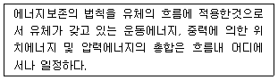
- 뉴턴의 점성법칙
- 베르누이의 정리
- 보일-샤를의 법칙
- 오일러의 상태방정식
(정답률: 26%)
75. 자연환기에 관한 설명으로 옳은 것은?
- 풍력환기에 의한 환기량은 풍속에 반비례한다.
- 풍력환기에 의한 환기량은 유량계수에 비례한다.
- 중력환기에 의한 환기량은 공기의 입구와 출구가 되는 두 개구부의 수직거리에 반비례한다.
- 중력환기에서 실내온도가 외기온도보다 높을 경우 공기는 건물 상부의 개구부에서 실내로 들어와서 하부의 개구부로 나간다.
(정답률: 23%)
76. 실내 음환경의 잔향시간에 관한 설명으로 옳은 것은?
- 실의 흡음력이 높을수록 잔향시간은 길어진다.
- 잔향시간을 길게 하기 위해서는 실내공간의 용적을 작게 하여야 한다.
- 잔향시간은 음향청취를 목적으로 하는 공간이 음성전달을 목적으로 하는 공간보다 짧아야 한다.
- 잔향시간은 실내가 확장음장일라고 가정하여 구해진 개념으로 원리적으로는 음원이나 수음점의 위치에 상관없이 일정하다.
(정답률: 12%)
77. 발전기에 적용되는 법칙으로 유도기전력의 방향을 알기 위하여 사용되는 법칙은?
- 오옴의 법칙
- 키르히호프의 법칙
- 플레밍의 왼손의 법칙
- 플레밍의 오른손의 법칙
(정답률: 20%)
78. 압력에 따른 도시가스의 분류에서 고압의 기준으로 옳은 것은? (단, 게이지압력 기준)
- 0.1MPa 이상
- 1MPa 이상
- 10MPa 이상
- 100MPa 이상
(정답률: 21%)
79. 냉방부하 계산 결과 현열부하가 620W, 잠열 부하가 155W일 경우, 현열비는?
- 0.2
- , 0.25
- 0.4
- 0.8
(정답률: 28%)
80. 다음의 냉동기 중 기계적 에너지가 아닌 열에너지에 의해 냉동효과를 얻는 것은?
- 원심식 냉동기
- 흡수식 냉동기
- 스크류식 냉동기
- 왕복동식 냉동기
(정답률: 28%)
5과목: 건축법규
81. 막다른 도로의 길이가 30m인 경우, 이 도로가 건축법상 도로이기 위한 최소 너비는?
- 2m
- 3m
- 4m
- 6m
(정답률: 21%)
82. 신축공동주택등의 기계환기설비의 설치 기준이 옳지 않은 것은?
- 세대의 환기량 조절을 위하여 환기설비의 정격풍량을 3단계 또는 그 이상으로 조절할 수 있는 체계를 갖추어야 한다.
- 적정 단계의 필요 환기량은 신축공동주택등의 새대를 시간당 0.3회로 환기할 수 있는 풍량을 확보하여야 한다.
- 기계환기설비에서 발생하는 소음의 측정은 한국산업규격(KS B 6361)에 따르는 것을 원칙으로 한다.
- 기계환기설비는 주방 가스대 위의 공기배출장치, 화장실의 공기배출 송풍기 등 급속 환기 설비와 함께 설치할 수 있다.
(정답률: 28%)
83. 주차전용건축물의 주차면적비율과 관련한 아래 내용에서, ()에 들어갈 수 없는 것은?
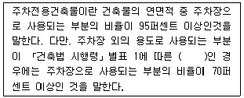
- 종교시설
- 운동시설
- 업무시설
- 숙박시설
(정답률: 10%)
84. 건축물과 분리하여 공작물을 축조할 때 특별자치시장ㆍ특별자치도지사 또는 시장ㆍ군수ㆍ구청장에게 신고를 해야 하는 대상 공작물 기준이 옳지 않은 것은?
- 높이 2m를 넘는 옹벽
- 높이 2m를 넘는 굴뚝
- 높이 6m를 넘는 골프연습장 등의 운동시설을 위한 철탑
- 높이 8m를 넘는 고가수조
(정답률: 25%)
85. 다음 중 제2종 일반주거지역안에서 건축할 수 없는 건축물은? (단, 도시ㆍ군계획 조례가 정하는 바에 따라 건축할 수 있는 경우는 고려하지 않는다.)
- 종교시설
- 운수시설
- 노유자시설
- 제1종 근린생활시설
(정답률: 27%)
86. 높이가 31m를 넘는 각 층의 바닥면적 중 최대바닥면적이 4500m2인 건축물에 원칙적으로 설치하여야 하는 비상용 승강기의 최소 대수는?
- 1대
- 2대
- 3대
- 5대
(정답률: 40%)
87. 다음 중 대지에 조경 등의 조치를 아니할 수 있는 대상 건축물에 속하지 않는 것은?
- 축사
- 녹지지역에 건축하는 건축물
- 연면적의 합계가 1000m2인 공장
- 면적이 5000m2인 대지에 건축하는 공장
(정답률: 20%)
88. 건축물의 바닥면적 산정 기준에 대한 설명으로 옳지 않은 것은?
- 공동주택으로서 지상층에 설치한 어린이놀이터의 면적은 바닥면적에 산입하지 않는다.
- 필로티는 그 부분이 공중의 통행이나 차량의 통행 또는 주차에 전용되는 경우에는 바닥면적에 산입하지 아니한다.
- 벽ㆍ기둥의 구획이 없는 건축물은 그 지붕 끝부분으로부터 수평거리 1.5m를 후퇴한 선으로 둘러싸인 수평투영면적을 바닥면적으로 한다.
- 단열재를 구조체의 외기측에 설치하는 단열공법으로 건축된 건축물의 경우에는 단열재가 설치된 외벽 중 내측 내력벽의 중심선을 기준으로 산정한 면적을 바닥면적으로 한다.
(정답률: 20%)
89. 특별피난계단의 구조에 관한 기준 내용으로 옳지 않은 것은?
- 계단실에는 예비전원에 의한 조명설비를 할 것
- 계단은 내화구조로 하되, 피난층 또는 지상까지 직접 연결되도록 할 것
- 출입구의 유효너비는 0.9m 이상으로 하고 피난의 방향으로 열 수 있을 것
- 계단실의 노대 또는 부속실에 접하는 창문은 그 면적을 각각 3m2 이하로 할 것
(정답률: 33%)
90. 국토의 계획 및 이용에 관한 법령상 용도지구에 속하지 않는 것은?
- 경관지구
- 미관지구
- 방재지구
- 취락지구
(정답률: 18%)
91. 도시ㆍ군계획 수립 대상지역의 일부에 대하여 토지 이용을 합리화하고 그 기능을 증진시키며 미관을 개선하고 양호한 환경을 확보하며, 그 지역을 체계적ㆍ계획적으로 관리하기 위하여 수립하는 도시ㆍ군관리계획은?
- 지구단위계획
- 도시ㆍ군성장계획
- 광역도시계획
- 개발밀도관리계획
(정답률: 25%)
92. 지하층에 설치하는 비상탈출구의 유효너비 및 유효높이 기준으로 옳은 것은? (단, 주택이 아닌 경우)
- 유효너비 0.5m 이상, 유효높이 1.0m 이상
- 유효너비 0.5m 이상, 유효높이 1.5m 이상
- 유효너비 0.75m 이상, 유효높이 1.0m 이상
- 유효너비 0.75m 이상, 유효높이 1.5m 이상
(정답률: 30%)
93. 지역의 환경을 쾌적하게 조성하기 위하여 대통령령으로 정하는 용도와 규모의 건축물에 대해 일반이 사용할 수 있도록 대통령령으로 정하는 기준에 따라 공개공지 등을 설치하여야 하는 대상 지역에 속하지 않는 것은? (단, 특별자치시장ㆍ특별자치도지사 또는 시장ㆍ군수ㆍ구청장이 따로 지정ㆍ공고하는 지역의 경우는 고려하지 않는다.)
- 준공업지역
- 준주거지역
- 일반주거지역
- 전용주거지역
(정답률: 18%)
94. 건축물의 거실(피난층의 거실 제외)에 국토교통부령으로 정하는 기준에 따라 배연설비를 설치하여야 하는 대상 건축물 용도에 속하지 않는 것은? (단, 6층 이상인 건축물의 경우)
- 종교시설
- 판매시설
- 방송통신시설 중 방송국
- 교육연구시설 중 연구소
(정답률: 28%)
95. 건축물과 해당 건축물의 용도의 연결이 옳지 않은 것은?
- 주유소 : 자동차 관련시설
- 야외음악당 : 관광 유게시설
- 치과의원 : 제1종 근린생활시설
- 일반음식점 : 제2종 근린생활시설
(정답률: 27%)
96. 건축법령상 용어의 정의가 옳지 않은 것은?
- 초고층 건축물이란 층수가 50층 이상이거나 높이가 200미터 이상인 건축물을 말한다.
- 증축이란 기존 건축물이 있는 대지에서 건축물의 건축면적, 연면적, 층수 또는 높이를 늘리는 것을 말한다.
- 개축이란 건축물이 천재지변이나 그 밖의 재해로 멸실된 경우 그 대지에 종전과 같은 규모의 범위에서 다시 축조하는 것을 말한다.
- 부속건축물이란 같은 대지에서 주된 건축물과 분리된 부속용도의 건축물로서 주된 건축물을 이용 또는 관리하는 데에 필요한 건축물을 말한다.
(정답률: 25%)
97. 건축물의 주요구조부를 내화구조로 하여야 하는 대상 건축물에 속하지 않는 것은?
- 공장의 용도로 쓰는 건축물로서 그 용도로 쓰는 바닥면적의 합계가 500m2인 건축물
- 판매시설의 용도로 쓰는 건축물로서 그 용도로 쓰는 바닥면적의 합계가 500m2인 건축물
- 창고시설의 용도로 쓰는 건축물로서 그 용도로 쓰는 바닥면적의 합계가 500m2인 건축물
- 문화 및 집회시설 중 전시장의 용도로 쓰는 건축물로서 그 용도로 쓰는 바닥면적의 합계가 500m2인 건축물
(정답률: 8%)
98. 기반시설부담구역에서 기반시설설치비용의 부과대상인 건축행위의 기준으로 옳은 것은?
- 100제곱미터(기존 건축물의 연면적 포함)를 초과하는 건축물의 신축ㆍ증축
- 100제곱미터(기존 건축물의 연면적 제외)를 초과하는 건축물의 신축ㆍ증축
- 200제곱미터(기존 건축물의 연면적 포함)를 초과하는 건축물의 신축ㆍ증축
- 200제곱미터(기존 건축물의 연면적 제외)를 초과하는 건축물의 신축ㆍ증축
(정답률: 8%)
99. 국토교통부령으로 정하는 기준에 따라 채광 및 환기를 위한 창문등이나 설비를 설치하여야 하는 대상에 속하지 않는 것은?
- 의료시설의 병실
- 숙박시설의 객실
- 업무시설 중 사무소의 사무실
- 교육연구시설 중 학교의 교실
(정답률: 25%)
100. 부설주차장 설치대상 시설물이 문화 및 집회시설(관람장 제외)인 경우, 부설주차장 설치기준으로 옳은 것은? (단, 지방자치단체의 조례로 따로 정하는 사항은 고려하지 않는다.)
- 시설면적 50m2당 1대
- 시설면적 100m2당 1대
- 시설면적 150m2당 1대
- 시설면적 200m2당 1대
(정답률: 20%)